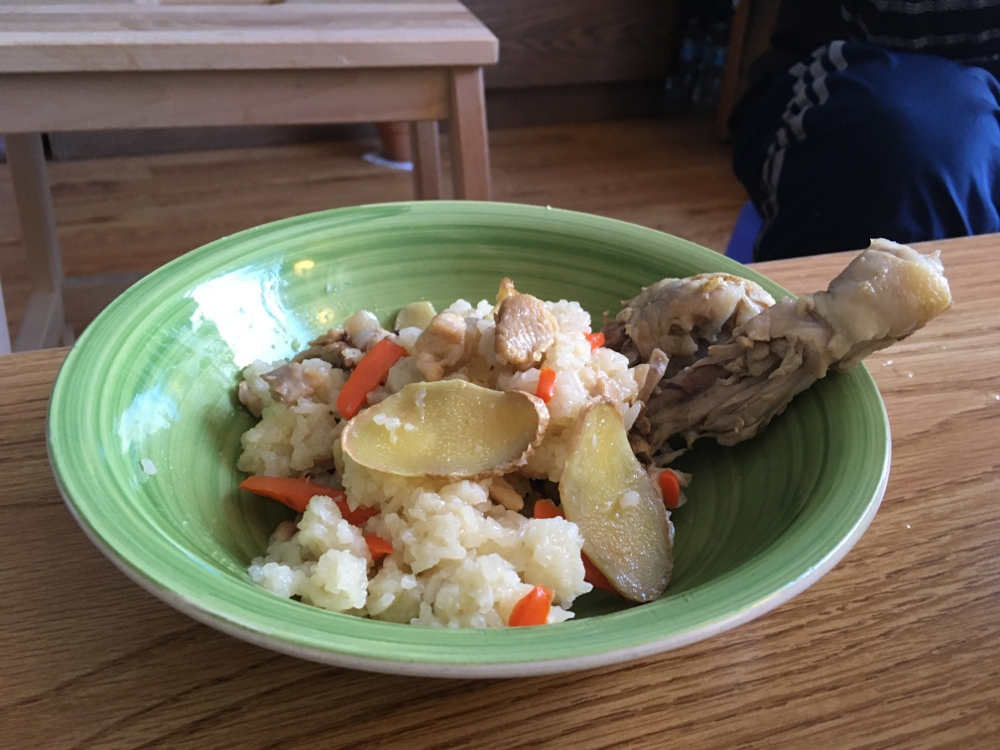
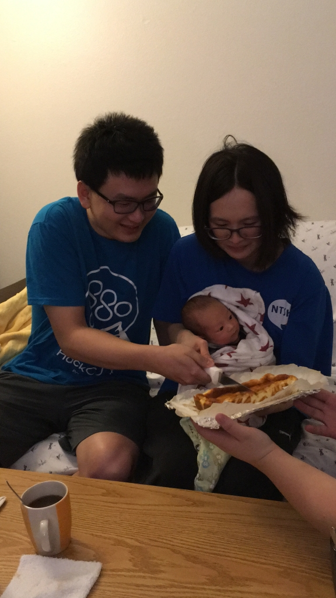
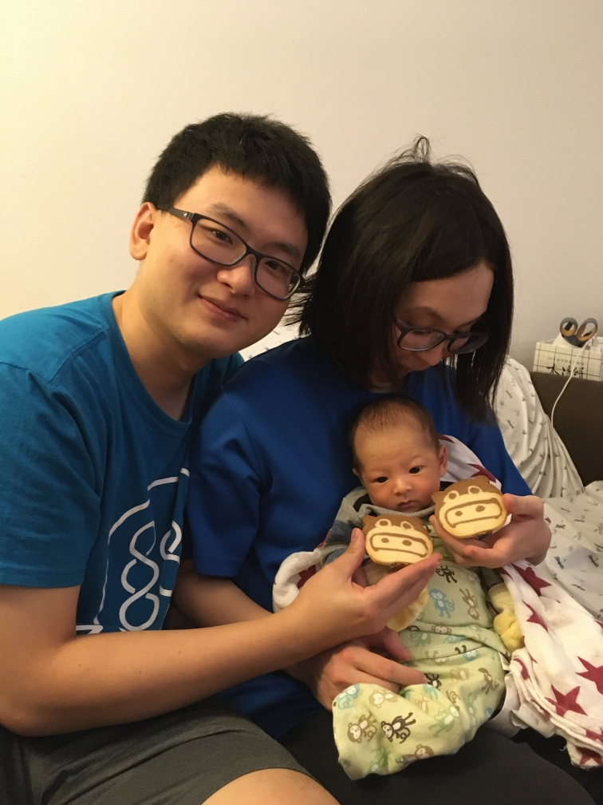

滿月
30天就在手忙腳亂之際匆匆的過去了，溜溜很快迎來自己的滿月，本來懶懶的沒有想要舉辦什麼特別的活動，但在小姨姨的幫助下做了蛋糕餅乾，也促成了溜溜的滿月紀念活動。以下我們先來採訪溜小弟：
溜溜你好，你知道今天你滿月了嗎？
滿月就是你已經一個月大了，會有很多好吃的甜點跟油飯喔！（但是你吃不到）
油飯
阿嬤用心準備香噴噴的雞腿油飯 
慶祝溜溜滿月的好康都給溜爸溜媽了 ^.<
溜搭溜搭
吃完晚餐後不知道為什麼變成滿月要帶溜溜出去逛逛，最後剛好就去 Costco 逛逛順便買菜囉～
吃甜點囉
回家之後就要來享用小姨姨親手做的甜點了！感謝小姨姨讚嘆小姨姨，沒有他繼續紀錄溜溜的生活的話，應該就沒有下一篇了 ^_^
我們也很榮幸的請到溜溜持刀切下第1刀 
還有跟可愛的豬豬餅乾合照 
來自高雄的祝福
這一天也要感謝遠在高雄的岳父岳母不辭辛勞準備了蛋糕、油飯來祝賀，也謝謝喜麗阿姨送的禮物。
平安快樂的度過了這一天，爸媽希望你以後健康快樂的長大就好。（當然也會適當的磨練你就是了 XD）